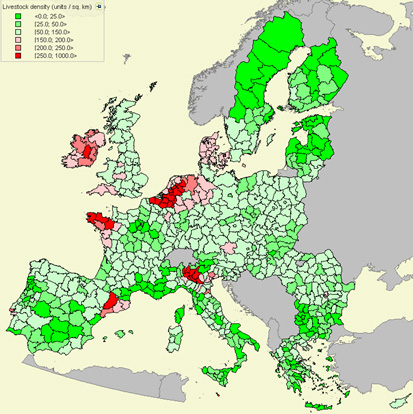
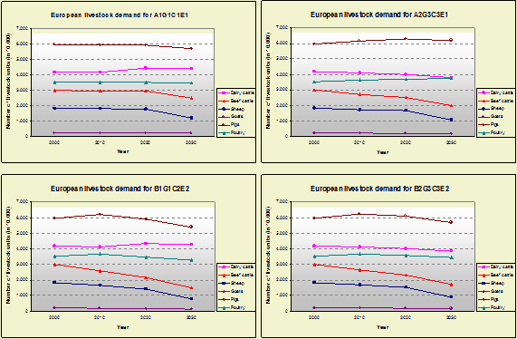

Highlights
Total livestock numbers will decrease slightly over time in all scenarios for
the EU27.
In general the EU15 member states show a decrease in almost
all livestock over time with a bigger decline for land-based livestock and a
slighter decline for land-less livestock.
For the new member states an increase is calculated for Global Economy (A1),
Continental Market (A2) and Global Cooperation (B1), mainly for cattle and poultry,
less for sheep, goats and pigs. An overall increase in livestock demand is only
expected in Global Economy (A1).
Livestock production is found everywhere in Europe. Highest concentrations of
livestock per square kilometer of agricultural land are found in The Netherlands,
Malta, Belgium, Britanny, Northern Italy, Northeastern parts of Spain, Denmark
and Ireland. This is mainly due to the historic presence of intensive livestock
systems especially for poultry and pigs.
Results show that livestock will remain concentrated. This will almost certainly
conflict with environmental legislation (Nitrates Directive, Water Framework
Directive, etc). Even in the Strong Europe and Regional Communities scenarios
where more strict environmental legislation is implemented in the model, livestock
density conflicts with environmental targets.
The demands for livestock are mainly economically driven. Implementation of
strict environmental policies will shifts in livestock have to be much stronger
that predicted. In many regions simply is not enough agricultural land available
to meet the lower livestock densities demanded by environmental targets.
The calculations of the values of this indicator are based on a preliminary
methodology and data. Improvement of the methods and underlying data is still in
progress. The results therefore should be interpreted carefully and only to
assess the broad patterns and changes between scenarios and policy options.

Figure 1 - Livestock density in Europe
Past developments
In the EU12 livestock numbers, expressed in livestock units were rather stable
in the period from 1990 to 2000, but this is not equally distributed between
the different livestock types. The number of livestock units of cattle and sheep
decreased. The livestock units of pigs, on the other hand, increased during
by 14.5% between 1990 and 2000 (EU12).
In Eastern Europe numbers of livestock have fallen by about 50%. Main reason
for this was the economic restructuring in the 1990s.
Distinct regional differences in livestock patterns are apparent from the Farm
Structure Survey data. Cattle production is dominant in the majority of the
administrative regions, whereas pig production is dominant in specific regions,
such as northeast Spain, The Netherlands, Flanders and Brittany. Sheep is dominant
in the highland regions of Scotland and Wales, as well as in central Spain.
Only in Denmark, Spain increases of over 10% of livestock units are seen in
the period 1990-2000 (Source Irena IFS 13).
Future developments
In the Global Economy (A1) and Continental Markets (A2) scenarios most increase
in livestock numbers is found through intensification at regions that are currently
most intensively used for livestock. However, in some of the most densely populated
regions some spread toward other areas is seen due to reaching the maximum livestock
densities that are possible given logistics and disease risk. Locations especially
easily accessible from harbours for imported feed but also towns for processing
industry and consumers are preferred as new locations for intensive livestock
production in the global orientated scenarios Global Economy (A1) and Global
Cooperation (B1).
In the Global Cooperation (B1) and Regional Communities (B2) scenarios spread
from the most densely populated regions towards regions with high development
potential is seen. In the Global Cooperation scenario this effect is strongest
in the nitrate vulnerable zones where policy measures are assumed to have drastically
limited the maximum stocking rates. In the Regional Communities scenario this
spread is not only limited to the nitrate vulnerable zones: both environmental,
animal welfare considerations and preference for less intensive systems lead
to more spread of livestock throughout the countries.

Figure 2 - Development of livestock for the baseline
scenarios
The biggest dynamics in the EU15 member states in terms of total changes per
livestock category between the initial year and 2030 are calculated for the
Continental Market scenario. The new EU member states, contrary, will hardly
show significant changes in livestock demand in this scenario.
The biggest dynamics for the new member states can be expected in a globalized
world with low governmental interventions, low trade barriers and no strict
environmental policies (Global Economy scenario).
Policy impact
Income support as instruvment of the CAP has a direct impact on the livestock
demand. The Global Economy (A1) scenarios consider two different options with
respect to future changes of income support, either an abolishment or a strong
decrease of income support of 50%. These two rather similar income support options
can cause big differences in livestock demand. In the new member states the
abolishment of income support leads to a more rapid decrease of demand compared
to the demand decrease in the decreasing income support scenario. The development
in the old member states can be expected to be slightly different. The abolishment
of income support leads in most of the old member states to an increase of dairy
cattle demand but the demand remains more or less stable for the other livestock
types. Assuming a decreasing income support (but no abolishment) lead to a decrease
of all livestock types in the old member states. In the scenarios Global Cooperation
and Regional Communities changes in income support have a much lower impact on the
livestock demand. The strongest impact of income support reduction is calculated for
the pig and poultry sector of the old EU member states where a decrease of income
support can cause an up to 8% lower demand compared to the increasing income support
scenario. This can be traced back to the high preference for local products and the
strong protection of the food industry from outside competition.v The policy options
on LFA and Biofuels do not show any or any clear effect on livestock demand.
Most important drivers
Changes in livestock numbers in Europe as a whole and between the different
member states are mainly driven by the consumer demand for livestock products,
production costs and policies on global trade of meat and dairy products. Within
countries the spatial distribution of livestock was, historically, mainly driven
by environmental parameters, such as climate, soil suitability, land use, slope
and distance from consumer locations.
Whereas the spatial distribution of land-based livestock keeping is still largely
based on the spread of pasture areas, the most important location considerations
for land-less systems are the competitive advantage of the region in terms of
logistics (feed availability trough e.g., harbours, and processing industries)
and environmental considerations related to manure and disease risk. Changes
in land use policies aiming at reducing negative environmental impacts as well
as changes in demand for animal products, either from local consumers or international
trade are assumed to strongly influence the spatial livestock distribution in
the future. From the results it is clear that policies limiting the maximum
livestock numbers in a region are a main driver for changing spatial distributions.
Discussion
Livestock is a new indicator in the Eururalis framework. In the modeling process
many challenges have been encountered. The environmental boundaries coming from
legislation are not yet fully implemented in the model. In a next version of
Eururalis that will be an important topic. Larger spread of livestock might
then be expected. This will have an influence on many other indicators.
The results clearly show that regional concentrations of livestock exist. These
concentrations of livestock potentially conflict with environmental targets.
Livestock production influences also many other - planet - indicators (in)directly:
erosion by overgrazing, biodiversity, nitrogen emissions and gaseous emissions
of ammonia, etc.
Used methodology
The demand for each livestock type is calculated with GTAP and IMAGE. GTAP is
applied to calculate livestock goods and services for consumption considering
bilateral livestock commodity trade. The GTAP output is used by IMAGE to calculate
how many animals are needed to meet this production and how much feed they need.
The amount of feed determines the size of pastureland, which is in line with
the number of animals and therefore the amount of animal production and consumption.
Given specific diet assumptions in IMAGE, i.e. how much pasture and how much
crops are needed by the animals, the area of pastureland is determined.
Initial and future livestock distribution:
In order to assess changes in the spatial distribution of livestock in relation
to land use change a map of the initial livestock distribution map has been
developed based on census data at the level of NUTS1 or NUTS2 regions. A further
downscaling was made based on reported livestock densities on different land
use and (assumed) location preferences. A major distinction is made between
different animal types: dairy cows, meat cows, sheep and goats are assumed to
be highly dependent on local land resources for grazing or feed production,
pigs and poultry are assumed to be mainly land independent animal husbandry
systems.
A spatial livestock distribution model has been developed to distribute, within
the different countries, the simulated changes in livestock numbers. The change
of livestock numbers is simulated by considering the initial livestock distribution,
land use changes, the carrying capacities of the different land use types, location
preferences, and prevalent policies under the scenario conditions.
For each of the four different reference scenarios a different, coherent set
of carrying capacities of the land and different types of spatial dynamics of
livestock growth are assumed. The 'low regulation', market oriented scenarios
("Global Economy" and "Continental Markets" allow for carrying capacities up
to 4.000 LSU per km2 and suppose a future distribution of livestock driven by
the initial distribution pattern: i.e., as long as the carrying capacities are
not exceeded it is assumed that most increase in livestock numbers occurs at
locations that already have high animal densities. In the 'high regulation'
B-scenarios ("Global Co-operation" and "Regional Communities ") wealth distribution
and sustainable development play a crucial role which led to the implementation
of environmental policies, for example Nitrate vulnerable areas. To meet these
requirements the livestock density is restricted to maximum 700 LSU per km2
Global Cooperation (B1) and 400 LSU per km2 (Regional Communities (B2)). In
these scenarios the spatial distribution is steered by the available resource
capacities based on either avoiding pollution of soil and water resources by
nitrogen or local availability of feed.
For more detailed information on the generation of the initial livestock map,
the livestock distribution algorithm and the underlying assumptions see the
background document.